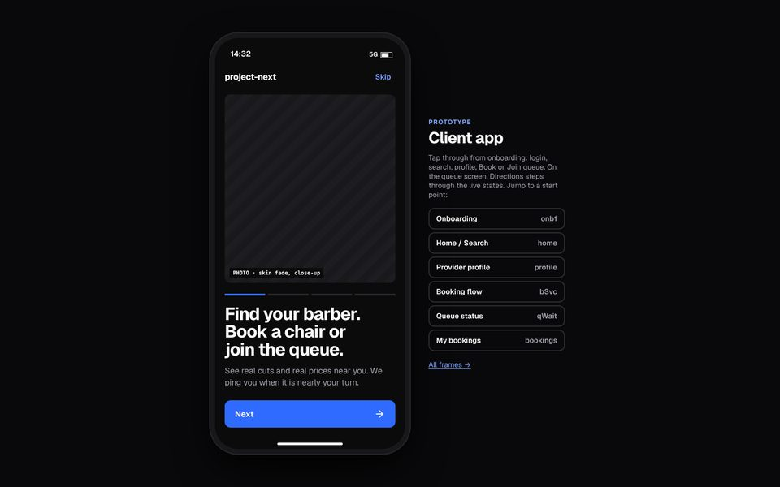
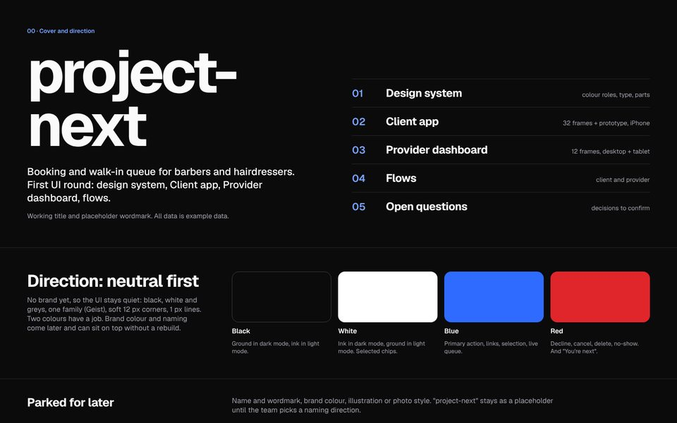
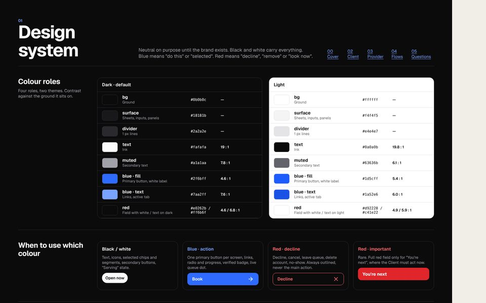
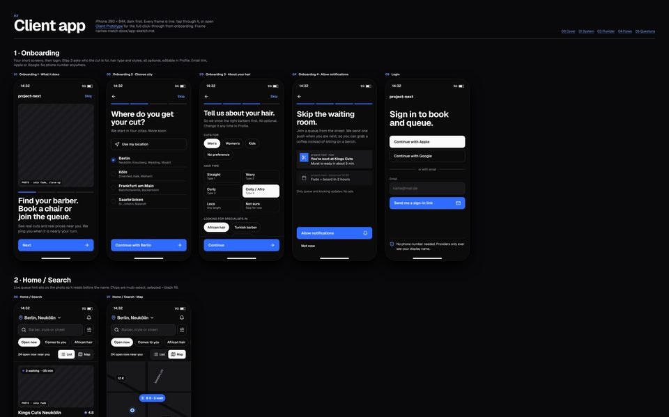
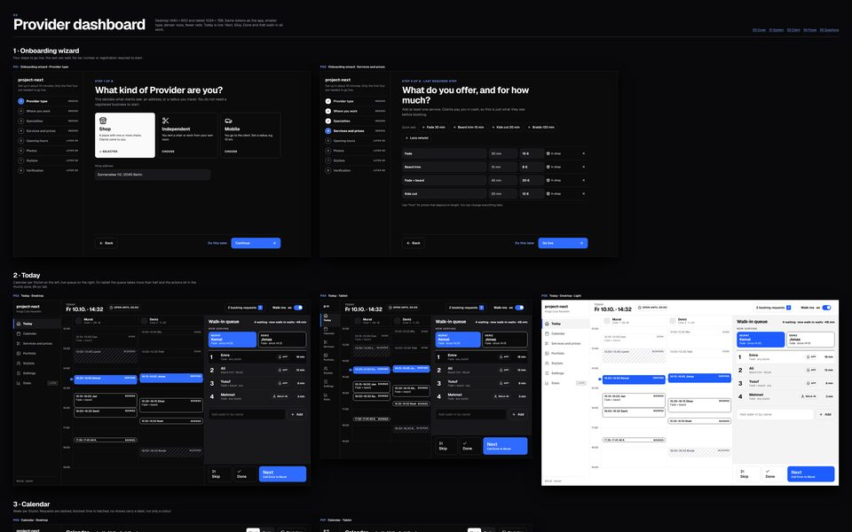
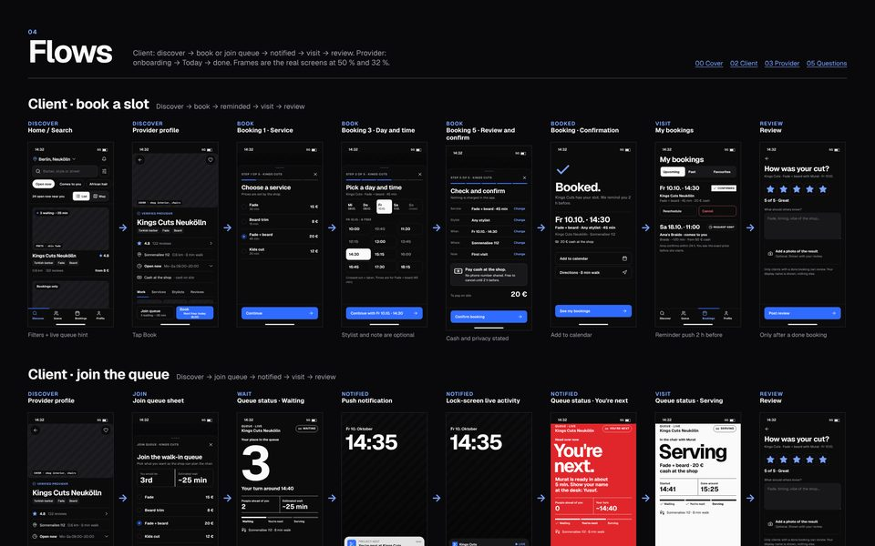
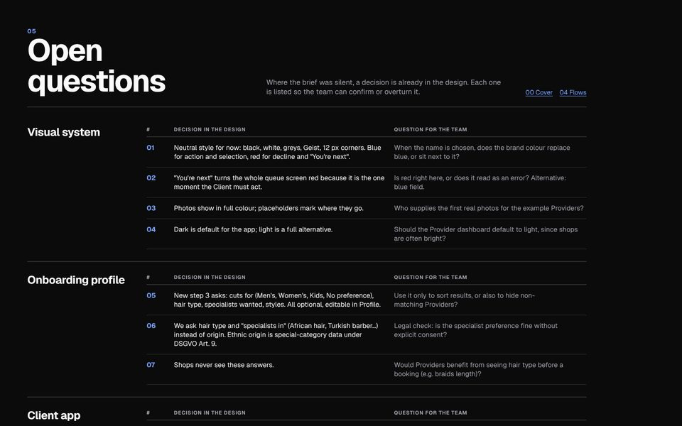

project-next · design round one · exported 1:1 from Claude Design · 2026-10-06
Design system, 32 Client app frames, 12 Provider dashboard frames, flows, open questions and a click-through prototype. Seven pages, each with its own navigation at the top.
The pages run in the browser with React and Babel loaded from unpkg.com, so they need internet. Everything marked as a decision on page 05 is a proposal until the team confirms it.

Prototype
Tap through from onboarding: login, search, Provider profile, Book or Join queue. On the queue screen, step through the live states. Jump to any start point.
Open prototype
00
Neutral first: black, white, greys, Geist. Blue for action, red for decline and "You're next". Brand colour and name come later.
Open page
01
Colour roles, type scale, spacing, buttons, chips, inputs, list rows, sheets, status pills.
Open page
02
32 live frames, iPhone 390 × 844, dark first plus light samples: onboarding, search, profile, booking, queue status, bookings, review, settings, empty and error states.
Open page
03
12 frames, desktop 1440 × 900 and tablet 1024 × 768: onboarding wizard, Today with the live queue, calendar, services, portfolio, stylists, settings, stats (later).
Open page
04
Client: book a slot. Client: join the queue. Provider: first day. Real screens at 50 % and 32 %.
Open page
05
20 decisions the design made where the brief was silent, each with the question for the team. Mirrored in the repo as round-one-decisions.md.
Open page